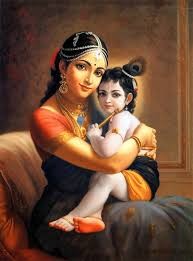
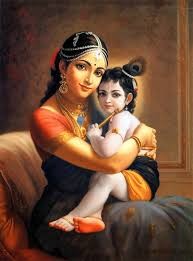

Vasudeva
Father of Lord Krishna
Shree Krishna, a central figure in Hinduism, is revered as the eighth avatar of Bhagwan Shree Vishnu. He was born in Mathura and raised in Vrindavan, India. Krishna's life, filled with divine leelas (miracles) and teachings, is recounted in Hindu scriptures like the Bhagavad Gita and the Mahabharata. He played a pivotal role in the Kurukshetra War, where he served as a charioteer and spiritual guide to Arjuna, imparting profound wisdom on duty, righteousness, and devotion. Krishna is often depicted as a blue-skinned deity playing the flute, symbolizing love, joy, and the union of the individual soul with the divine. He is also adorned with a peacock feather on his head and holds a flute in his hands.

 


While Lord Krishna's life is filled with countless divine events and leelas (plays), we have curated a selection of key events that illuminate the essence of his divine journey. Explore these significant moments that have left an indelible mark on Hindu mythology and spirituality.

Lord Krishna's birth in Mathura is a divine tale. It occurred on a stormy night in the prison cell of his
Read More
At just 3 months old, he demonstrated his divine power by defeating Sakatasura, a malevolent demon
Read More
At the tender age of one, the divine child achieved a remarkable feat by vanquishing Trinavarta, a wicked demon who
Read More
At the age of two, Lord Krishna encountered Vatsasura, a malevolent demon disguised
Read MoreAt the tender age of four, Lord Krishna confronted Bakasura, a menacing crane demon, in the village of
Read MoreAt the tender age of five, Krishna encountered Aghasura, a malevolent serpent demon.
Read MoreAt the age of six, Krishna confronted Dhenukasura, a vile demon in the form of an ass.
Read More
At the tender age of seven, Lord Krishna faced the venomous Kaliya serpent in the waters of the Yamuna River.
Read More
When Nalakuvara and Manigriva, the demigods, concluded their prayers, young Lord Krishna,
Read More
The Gopis bathed in the holy river Yamuna naked. It is an offence.. So, Krishna wanted to teach them lesson. So, He
Read More
One of the most iconic episodes in Lord Krishna's life is his act of lifting
Read MoreAt the age of two, Lord Krishna encountered Vatsasura, a malevolent demon disguised
Read More
At the age of 8, Lord Krishna performed the Rasa Dance, a divine and enchanting event in Hindu mythology. In Vrindavan,
Read MoreAt the age of 11, Lord Krishna confronted and defeated the tyrant King Kamsa. Kamsa, driven by fear of a prophecy,
Read More
At the age of 16, Lord Krishna's divine love story with Princess Rukmini
Read More
Jarasandha, fueled by rage over his son-in-law Kansa's death at the hands of Krishna,
Read MoreSudama, a humble Brahmin and dear friend of Lord Krishna from their childhood, faced
Read MoreShishupala, a cousin of Lord Krishna and an enemy of the Yadava clan, At the royal
Read More
During the game of dice in the Kaurava court, Draupadi, the
Read MoreBefore the Mahabharata war, both "Arjuna" & "Duryodhana" (the two opponents in the war) went to "Lord Krishna" for His
Read MoreDuring the Kurukshetra War, Lord Krishna bestowed a divine vision, known as Vishvarupa or
Read MoreThe Bhagavad Gita, often referred to as the Gita, is a 700-verse Hindu scripture that
Read MoreAmidst the Kurukshetra War, as Bhishma lay on a bed of arrows, Lord Krishna imparted
Read MoreAs the Kurukshetra War neared its climax, Lord Krishna held a profound dialogue with Guru Drona, offering spiritual
Read MoreIn the crucial moments before Karna's death in the Kurukshetra War, Lord Krishna i
Read MoreDuring the Kurukshetra aftermath, Gandhari, grieving her sons' deaths, cursed Lord
Read More
At the age of 125, decades after the Kurukshetra War, Lord Krishna's earthly journey
Read MoreThis is one of the most important lessons kids can learn from Krishna. Even though Krishna focuses on and plans for the future, he never fails to live in the present. He practised mindfulness, the act of focusing and living in the moment instead of worrying about the past or the future. This skill helps one make memories and live a less stressful life.
TDespite being the Lord of the universe, Krishna never shied away from his duties. It is one of the things he is well-known for. Krishna stressed the importance of completing your duties by yourself. He taught people to fulfil their duties without focusing on the outcome. He willed people to enjoy the journey rather than be driven by the results.
Even though he was burdened with saving the kingdom, being a good king, and answering his devotee’s every prayer, Krishna always made time for what he loved. Krishna’s love for his flute and music is not surprising to anyone who has read about him. Krishna never stopped pursuing his love for music and it brought him peace even in the midst of a war. Regardless of what is going on in your life, it is always important to spare time for the things you love.
One would expect the Lord of the universe to be haughty or above all but that is never the way Krishna behaved. He always stayed humble and respected his elders. This character trait made him loveable and earned him devotees from all over the world. Krishna showed that you do not win over people by power but you win them over by being kind and showing everyone respect.
Krishna had to make some tough decisions during the battle of Kurukshetra including making some sacrifices to win the battle. Sometimes, life demands sacrifices, be it getting out of your comfort zone or putting your ego second. In order to succeed in life, you should be able to sacrifice and compromise at times for the bigger picture.
Krishna respected every person, animal, or living being he encountered, He believed that everyone deserves respect regardless of their societal status or job. Spiritually, we are all the same and Krishna showed us that by treating everyone with the same respect.
Krishna valued his friendships greatly which is evident by his love for his childhood friend Sudhama. When Krishna found out that Sudhama was struggling to put food on the table, he gifted him with shelter, food, and luxury. This can teach kids a lesson or two about being loyal to our friends or being there for them in their time of need.
This is one of the most imperative lessons you can teach your child. Krishna always preached about finding happiness within oneself as opposed to relying on other people or materialistic things. While a new toy or a video game might put a smile on your child’s face, it is temporary. True happiness lies in the little things in life and the sooner your children realise that, the happier they will be.
Krishna was a big believer in fate and destiny. While one should not always rely on fate, it helps to think that behind everything, there is a reason. Whether good or bad, everything happens for a reason. The key lies in staying calm and trusting yourself and the universe.
Everything Krishna did was fuelled by unconditional love. His kindness, humility, and affection for people around him were because of his unconditional love. Regardless of what curveball life throws at you, if you lead by love, you will never fail.
There are numerous significant figures in Lord Krishna's life, each contributing to the vibrant tapestry of his mythology and teachings. Below, we've highlighted some of the key figures who played pivotal roles in his divine journey.
Father of Lord Krishna

Mother of Lord Krishna
Lord Krishna's Foster Father
Lord Krishna's Foster Mother
Lord Krishna's Elder Brother & incarnation of Shesh Nag

Lord Krishna's Younger Sister & incarnation of Goddess Yogmaya

Childhood Friend of Lord Krishna
Uncle and Main Adversary of Lord Krishna

Krishna's beloved, a symbol of divine love and devotion & incarnation of Shri Lakshmi

Gopis were devoted cowherd girls in Vrindavan, cherished by Lord Krishna

Wife of Lord Krishna & incarnation of Shri Lakshmi
Wife of Lord Krishna
Guru of Lord Krishna & Lord Balarama

The Family Priest of Lord Krishna

Devotee and Friend of Lord Krishna

Friend and Messenger of Lord Krishna
Mother of Pandavas and Aunt of Lord Krishna

Friend and Devotee of Lord Krishna

Devotee and Friend of Lord Krishna & Wife of Pandavas
Five sons of Pandu & Dearest allies and loyal comrades in life's journey
Names: Yudhishthira, Bheema, Arjuna, Nakula, Sahadeva
Eldest Son of Lord Krishna
Son of Lord Krishna
Including Charudeshna, Sudeshna, and others
Rohini, Devaki, Pouravi, Bhadra, Madira, Rochana and Ila.
In the tapestry of India's rich cultural heritage, numerous festivals paint a vibrant picture of devotion and tradition. Yet, among the myriad celebrations that grace this land, some key festivals hold a special place, their significance etching deep emotions in the hearts of millions.
Amidst laughter and devotion, the Festival of Colors rejoices in the eternal love of Lord Krishna and Radha, painting hearts with vibrant emotions.
On the day of Holi, in Vrindavan and Mathura, this floral celebration, showering petals of devotion, cherishes Lord Krishna's love.
A sacred day of intense devotion, falls during the Krishna Paksha of Ashadha (June-July), as devotees eagerly embrace the spiritual journey towards Lord Krishna's blessings.
During the joyous festival of Govardhan Puja, which falls after Diwali, devotees celebrate Lord Krishna's divine protection and love in a spirit of gratitude and devotion.
Dahi Handi, observed during Janmashtami, recreates Lord Krishna's playful attempts to reach pots of butter as a cherished tradition.
Celebrated on Kartik's eighth day, resonates with the emotional joy of Lord Krishna's early life as a cherished cowherd.
During the month of Shravan, a heartfelt celebration unfolds as devotees lovingly swing Lord Krishna and Radha in their hearts, embracing their divine love.
Devotees, in deep devotion, encircle the sacred Govardhan Hill, mirroring Lord Krishna's protective embrace, expressing their love and faith.
On this day, devotees ardently believe that fasting and prayers open the gates to Lord Krishna's celestial abode, their hearts brimming with faith and hope.
The iconography of Lord Krishna is a sacred tapestry, weaving together visual symbols that reflect his divine essence. Each element carries profound emotional and spiritual significance, evoking deep reverence and connecting souls to the eternal love of Krishna.
Lord Krishna is often depicted with a dark blue complexion, symbolizing the infinite depth of the universe and his divine nature.
The bansuri is a symbol of his musical talents and his ability to create celestial melodies.
Adorning his hair, the peacock feather represents Lord Krishna's mastery over the ego. It reminds devotees to overcome vanity and pride.
His vibrant yellow dhoti symbolizes the earth's rich harvest and the fertile abundance of life.
His turban signifies his regal presence and divine authority.

The conch symbolizes the sacred sound of the universe and Lord Krishna's divine call to spiritual awakening.
Lord Krishna's lotus eyes depict purity, enlightenment, and the ability to rise above the material world.
His crown signifies his royal status as a divine ruler and his position as the king of hearts.
In the venerable tradition of Krishna Sahasranama, which consists of 108 sacred names, some of them are added here. These divine appellations collectively reveal the essence of the Supreme Lord, Krishna.
Derived from the Sanskrit word "Krish," meaning dark or black, referring to his complexion.
Portrays Krishna as a revered sage with a flowing beard, emphasizing his wisdom and teachings and son of Vasudeva and Devaki.
Meaning "Son of Devaki," honoring his mother.
Acknowledging his upbringing by Yashoda, his foster mother.

The Protector of All.
Referring to his melodious flute-playing.
Associating him with the sweetness of honey.
Celebrating his role as the giver of joy to cows and humans.
Representing his lifting of the Govardhan Hill to protect the villagers.
Indicating his status as the beloved son of Nanda.

Derived from "Dama" (rope) and "Udara" (belly), recalling an incident where young Krishna was tied with a rope.

A tender name, expressing his childhood charm.
Referring to his role in slaying the demon Mura.
Describing his enchanting dark beauty.
Signifying his status as the Lord of Dwarka.
"The Infinite," representing his limitless divine qualities..

Signifying his eternal bliss and joy.
Describing him as the Supreme Soul.
Representing him as the Lord of the Universe.
Acknowledging his role as the husband of Goddess Lakshmi.
Recognizing his ability to dispel the suffering of devotees.
Indicating his role as the beloved of the gopis.
Referring to him as the beloved of Radha.
Celebrating his playful role as the "Butter Thief," embodying endearing innocence and charm.
Lord Krishna's teachings continue to inspire millions, promoting a life of righteousness, self-realization, and devotion to God.